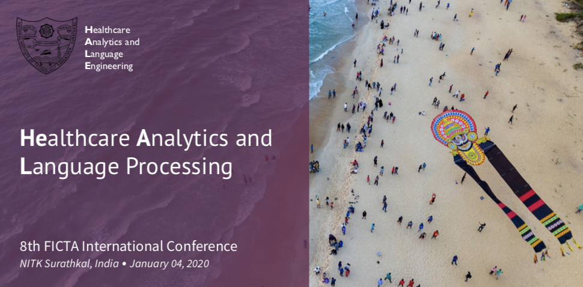
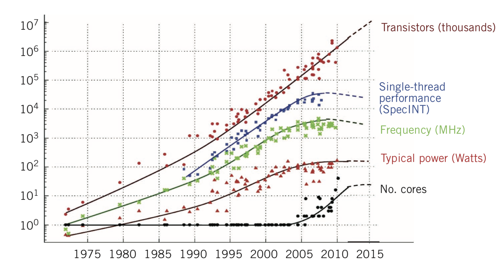
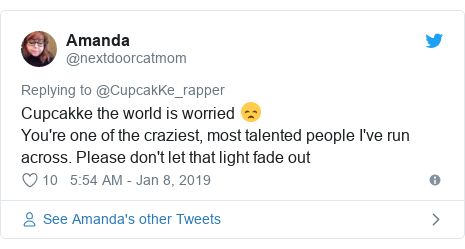
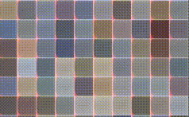

Scientific activities
Latest news:
|
Teaching assistant for Natural Language Processing CS4740/LING4744/COGST4740/CS5740, F22 at Cornell University (Ithaca, NY). Please check out the Cornell NLP for references and additional courses offered. (I plan to post all notes I take (or make) throughout the course within the pages of my website, and update links here and elsewhere accordingly.) Office hours: M 10-11am (Rhodes 406), T 03-04pm (Hollister 306) (Google calendar) Discussion: Ed Discussion, CS 4740 Email: intro-nlp-staff@cornell.edu |
Founder of the Machine Learning Reading Group for all the enthusiasts of artificial intelligence domains and applications, such as data science, natural language processing, natural language inferencing, generative adversarial learning, statistical understanding, and reinforcement learning, at Amazon.com, Inc. |
Co-chair of the Special Session on Healthcare Analytics and Language Processing (HeAL) program committee at the 8th International Conference on Frontiers of Intelligent Computing: Theory and Applications (FICTA), January 04 – 05 2020.  |
Keynote on Applications of High Performance Computing in Big Data Analytics: A Journey to Exascale Computing at the one week national workshop on High Performance Computing and Applications (HPCA), August 12 – 17, 2019, National Institute of Technology Karnataka.  |
|
Keynote on Building Predictive Applications Using Social Media Footprints: Opportunities and Pitfalls at the one week workshop on Predictive Analytics and Applications (PAA), January 14 – 18 2019, National Institute of Technology Karnataka. |
Project mentor for Prediction of Suicidal Intentions by Exploring and Mining the Social Web, at the Institution of Engineers Club (January – April 2019), National Institute of Technology Karnataka.  |
Teaching Assistant for Socket Programming, Computer Communications and Networking (IT251) at the Department of Information Technology (January – April 2018), National Institute of Technology Karnataka. |
|
Interesting discussions and learnings from the mentorship on Machine Intelligence: Unreasonable Effectiveness of Learning Algorithms at the Winter Mentorship Programme (January – April 2016), Web Enthusiasts' Club, National Institute of Technology Karnataka.  |